Popis akce
Akce za linií je postavena na komorním LARPu odehrávajícím se po téměř celou dobu pobytu hráčů. Mezitím můžou účastníci dělat téměř cokoliv. Od hraní deskovek, po boj se zbraněmi. Komorní LARP, zasazený do fiktivního světa, bude o dopadech války na odlehlou vesnici z období podobného 20. století.
Cena
- Vstupné včetně stravování - 300kč
(Vstupné nevracíme ani pokud na akci nepojedete) - Půjčovné za jednoruční zbraň - 15kč
(Zbraň si půjčovat nemusíte, nebudou přímou součástí hry) - Cesta do Perninku - Pokud pojedete s námi je to 240 kč za obě cesty + cca 50 kč na dopravu z Karlových Varů do Perninku a naopak (viz níže).
Vybavení
POVINNÉ:
Spacák, voda a svačina na cestu (teče tam pitná voda), Telefon, kostým z první poloviny dvacátého století tématizované do zapadlé vesnice.
DOPORUČENÉ:
rukavice, světlo, zbraň, věci do přírody, batoh (nejlépe nevýrazný), powerbanka (pokud má váš
mobil slabou baterku)

Organizátoři
Hugo,
Kvido
Více informací zde.

Místo
LARP se bude v krušnohorské obci Pernink (Kostelní 11). Ubytování je ve staré apartmánové chalupě, se splachovacím záchodem, sprchou, pitnou vodou, funkční kuchyní a lednicí.

Program
PÁTEK:
- Oficialní sraz na nástupišti 2 ÚAN florencv 15:15
- Odjezd autobusu do karlových varů 15:30
- 17:45 příjezd do Karlových Varůa následovný odjezd autobusem do Perninku v 18:09
- 19:00 ubytování a večeře
- Hlavní náplň akce: komorní LARP Za linií
- doprovodný program a průběh akce Za linií
- Zakončení komorního larpu a úklid
- 12:45 odjezd do Karlových Varů
- 13:55 příjezd do Karlových Varů
- 15:00 odjezd autobusem do Prahy
- 17:15 příjezd na ÚAN Florenc (je možnost se odpojit po cestě)
Stravování:
Cena za stravování je zahrunuta ve vstupném. Hráči budou dostávat suroviny na vaření v průběhu hry a následně budou vařit, též součástí hry a za podpory organizátorů.